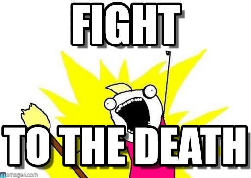

class: center, middle # Q: How should I implement * in my Rails app? # A: There is a gem for that! --- class: center, middle --- class: center, middle # Responsible gem collector ### Adam Niedzielski --- class: center ## About me CEO @ Sunday Coding<br/> Ruby / JavaScript consultant <br/> twitter: @niedzielskiadam<br/> blog.sundaycoding.com<br/> Codebase Health Check - check.sundaycoding.com --- class: center, middle # Rails is great for prototyping --- class: center, middle # I've never prototyped anything --- class: center, middle # My experience --- class: center, middle # This talk is all about examples --- class: center, middle # <span style="color: red;">♥</span> for all gem maintainers --- class: center, middle # Paranoia # <span style="color: #DB121C;">💎</span> --- ##.center[Paranoia] ```ruby client.destroy # not really ``` --- ##.center[Paranoia] ```ruby client.destroy # not really client.really_destroy! ``` --- ##.center[Method name lies] --- ##.center[default_scope] ```ruby def self.acts_as_paranoid(options={}) # [...] default_scope { paranoia_scope } # [...] end ``` --- ##.center[default_scope] ```ruby def self.acts_as_paranoid(options={}) # [...] default_scope { paranoia_scope } # [...] end def product Product.unscoped { super } end ``` --- class: center, middle # obfuscate_id # <span style="color: #DB121C;">💎</span> --- ##.center[obfuscate_id] ```ruby class Post < ActiveRecord::Base obfuscate_id end ``` --- ##.center[obfuscate_id] ```ruby module ClassMethods def find(*args) scope = args.slice!(0) options = args.slice!(0) || {} if has_obfuscated_id? && !options[:no_obfuscated_id] if scope.is_a?(Array) scope.map! {|a| deobfuscate_id(a).to_i} else scope = deobfuscate_id(scope) end end super(scope) end end ``` ??? - A simple Rails plugin to mix up resource ids a bit. - For new websites, you may not want to give away how few people are signed up. - Every website has a third user, but that third user doesn't have to know he is the third user. - Transforms normal seqential ids into random-looking ten digit numerical strings. - No database changes or migrations are needed. The record is still stored in the database with its original id. --- class: center, middle # Overriding methods --- class: center, middle # FriendlyId # <span style="color: #DB121C;">💎</span> --- ##.center[FriendlyId] ```ruby Post.find("my-awesome-post") ``` --- ##.center[FriendlyId] ```ruby Post.find("my-awesome-post") Post.friendly.find("my-awesome-post") ``` --- ##.center[How is slug generated?] ```ruby module FriendlyId module Slugged def self.included(model_class) # [...] model_class.before_validation :set_slug # [...] end end end ``` --- ##.center[Callbacks] --- class: center, middle # Geocoder # <span style="color: #DB121C;">💎</span> --- ##.center[Geocoder] ```ruby geocoded_by :full_street_address after_validation :geocode ``` --- class: center, middle # Elasticsearch - easy vs. simple --- class: center, middle # Elasticsearch::Model # <span style="color: #DB121C;">💎</span> --- ##.center[Elasticsearch::Model] ```ruby class Article < ActiveRecord::Base include Elasticsearch::Model include Elasticsearch::Model::Callbacks end ``` --- ##.center[Elasticsearch::Model] ```ruby class Article < ActiveRecord::Base include Elasticsearch::Model include Elasticsearch::Model::Callbacks end Article.import articles = Article.search('foobar').records ``` --- class: center, middle # Limitations --- class: center, middle <h1 style="font-size: 50px;">Elasticsearch::Persistence</h1> # <span style="color: #DB121C;">💎</span> --- ##.center[Elasticsearch::Persistence] ```ruby class ArticleRepository include Elasticsearch::Persistence::Repository def serialize(record) # [...] end def deserialize(document) # [...] end end ``` --- ##.center[Elasticsearch::Persistence] ```ruby class ArticleRepository include Elasticsearch::Persistence::Repository def serialize(record) # [...] end def deserialize(document) # [...] end end repository = ArticleRepository.new repository.save(article) ``` --- ##.center[Elasticsearch::Persistence] ```ruby class ArticleRepository include Elasticsearch::Persistence::Repository def find_by_title(title) search(query: { match: { title: title } }) end end results = repository.find_by_title('fox dog') ``` --- class: center, middle # Full-text search gets separated --- ##.center[Paperclip vs. CarrierWave]  --- class: center, middle # Paperclip # <span style="color: #DB121C;">💎</span> --- ##.center[Paperclip] ```ruby class User < ActiveRecord::Base has_attached_file :avatar end ``` --- ##.center[Paperclip] ```ruby class User < ActiveRecord::Base has_attached_file :avatar, styles: { medium: "300x300>", thumb: "100x100>" }, default_url: "/images/:style/missing.png", processors: [:rotator], s3_permissions: :private, convert_options: { all: '-strip -auto-orient -colorspace sRGB' } validates_attachment_content_type :avatar, content_type: /\Aimage\/.*\Z/ end ``` --- class: center, middle # CarrierWave # <span style="color: #DB121C;">💎</span> --- ##.center[CarrierWave] ```ruby class AvatarUploader < CarrierWave::Uploader::Base include CarrierWave::MiniMagick process resize_to_fit: [800, 800] version :thumb do process resize_to_fill: [200,200] end def store_dir "uploads/#{mounted_as}/#{model.id}" end def extension_white_list %w(jpg jpeg gif png) end # [...] end ``` --- class: center, middle # Models have too many responsibilities --- class: center, middle # StateMachines # <span style="color: #DB121C;">💎</span> --- ##.center[StateMachines] ```ruby class Vehicle < ActiveRecord::Base state_machine :state, initial: :parked do before_transition parked: any - :parked, do: :put_on_seatbelt after_transition on: :crash, do: :tow after_transition on: :repair, do: :fix event :park do transition [:idling, :first_gear] => :parked end # [...] end end ``` --- class: center, middle # Own your business logic --- class: center, middle # Pundit # <span style="color: #DB121C;">💎</span> --- ##.center[Pundit] ```ruby class PostPolicy attr_reader :user, :post def initialize(user, post) @user = user @post = post end def show? user.admin? || post.user == user end end ``` --- ##.center[Pundit] ```ruby def show @post = Post.find(params[:id]) authorize @post end ``` --- ##.center[Pundit] ```ruby def show @post = Post.find(params[:id]) authorize @post, :show? end ``` --- ##.center[Pundit] ```ruby class Post < ActiveRecord::Base def self.policy_class DifferentPolicy end end ``` --- ##.center[Pundit] ```ruby Pundit.policy!(user, post).show? ``` --- ##.center[Pundit] ```ruby PostPolicy.new(user, post).show? ``` --- class: center, middle # Which gems are safe? --- class: center, middle # API wrappers --- class: center, middle # Stripe # <span style="color: #DB121C;">💎</span> --- ##.center[Stripe] ```ruby Stripe.api_key = "key" Stripe::Charge.create( amount: 400, currency: "eur", source: "tok_87zVXUEg4ljnsi", description: "Charge for test@example.com" ) ``` --- class: center, middle # Adapters for external services --- class: center, middle # Bunny # <span style="color: #DB121C;">💎</span> --- ##.center[Bunny] ```ruby connection = Bunny.new(host: 'localhost') connection.start channel = connection.create_channel exchange = channel.fanout( exchange_name, durable: true ) exchange.publish(message.to_json) ``` --- class: center, middle # Not the core of your business --- class: center, middle # Spreadsheet # <span style="color: #DB121C;">💎</span> --- ##.center[Spreadsheet] ```ruby book = Spreadsheet::Workbook.new sheet1 = book.create_worksheet sheet1.name = 'My First Worksheet' sheet1[1,0] = 'Japan' book.write '/path/to/output/excel-file.xls' ``` --- ##.center[Recap] 1. Don't delegate your business logic to gems --- ##.center[Recap] 1. Don't delegate your business logic to gems 2. Invoke library code explicitly --- ##.center[Recap] 1. Don't delegate your business logic to gems 2. Invoke library code explicitly 3. Take a peek under the hood --- class: center, middle # Thank you! --- class: center ##.center[Questions?]